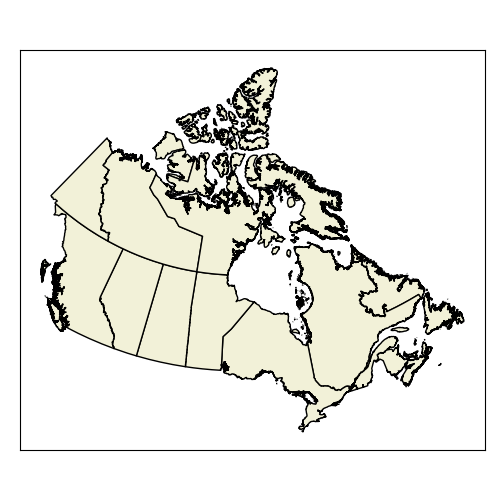
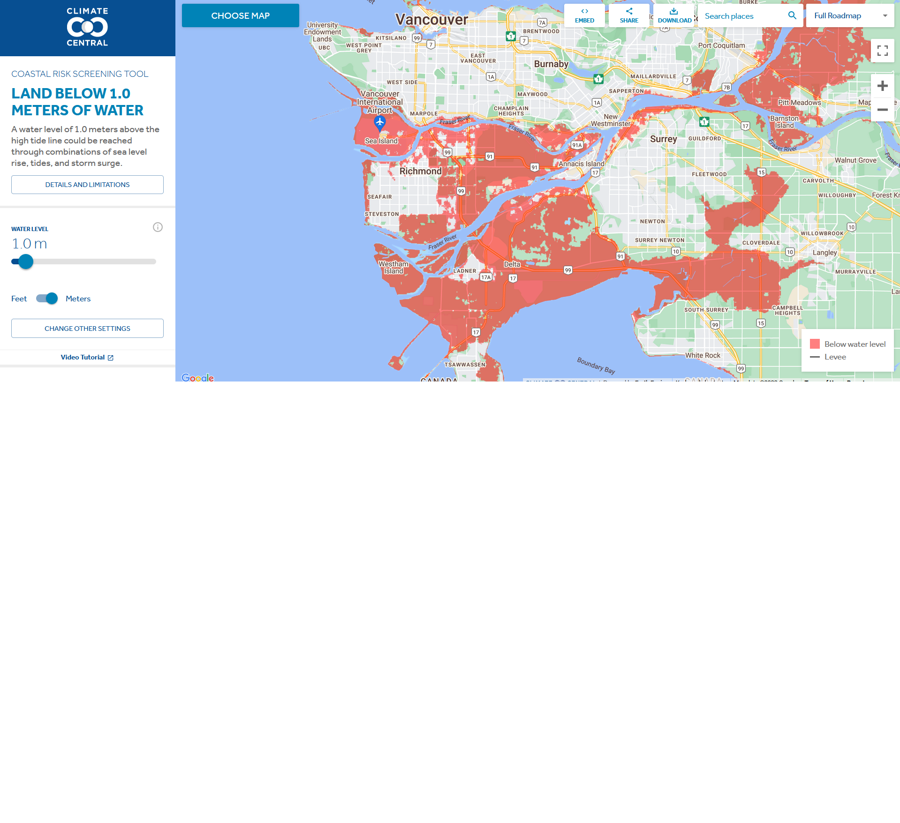
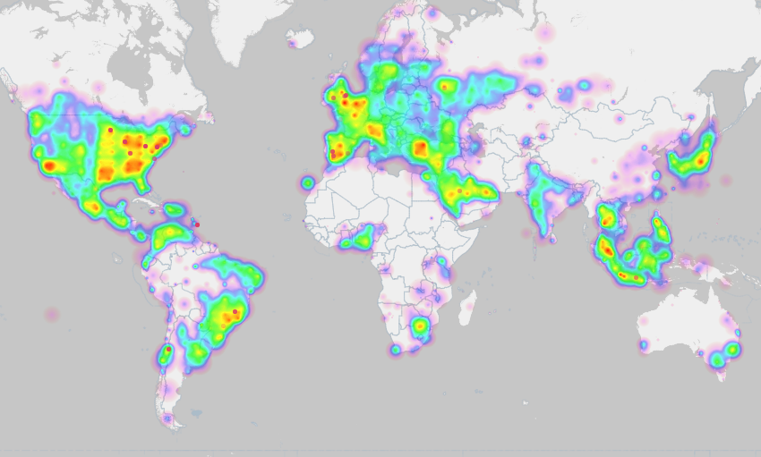

What is a Phenomenon?

What is a Phenomenon?
A lightning strike

What is a Phenomenon?
A Country

What is a Phenomenon?
A Coastline

What is a Phenomenon?
A dog on a kayak!

Types of Phenomena
Discrete Objects
Continuous Fields
Types of Phenomena
Discrete Objects
- Distinct boundaries - can be exactly measured
- Finite - countable
Continuous Fields
- No distinct boundaries - everywhere has a value
- Infinitely divisible - not countable
Types of Phenomena
When is a phenomenon discrete or continuous?
- To an extent, it depends on our perspective and the scale of our analysis.
- Many phenomenon are a bit of both.
Lightning
Lightning
- A strike is a discrete object
- A lighting bolt ...?
- Strike frequency is a continuous field

Coastline
- Continuous field at large scale
Coastline
- Continuous field at large scale
- Discrete object at small scale

Coastline
- Continuous field at large scale
- Discrete object at small scale
- Unless you change the time scale

Types of Phenomena
That said, it is a helpful framework as long as we recognize the discrete vs. continuous dichotomy is not a perfect classification.
Discrete Objects
Buildings
- Concrete Boundaries
- Countable
- Real Physical Object

Discrete Objects
Political Boundaries
- Distinct Boundaries
- Countable
- Not a Physical Object
Continuous Fields
Elevation
- Everywhere on Earth
- No "number of elevations"
- A physical property

Continuous Fields
Density of tweets
- Everywhere has this too
- Derived from something countable
- Not a physical property

Working Together
In Module 1, you used discrete data (deaths) to calculate a continuous field (Kernel Density).

Working Together
In this Module you calculate:
- Average NDVI value (continuous field)
- Within census areas (discrete objects)